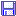
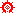
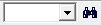
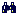
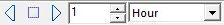

Barre principale

Groupe Fichier
- Crée un nouvelle carte raccourci pour Fichier > Nouvelle carte.
- Ouvrir une carte raccourci pour Fichier > Ouvrir.
-  Enregistrer la carte raccourci pour Fichier > Enregistrer sous.
- Imprimer la carte raccourci pour Fichier > Imprimante.
Vision de nuit (Voir)
-  Vision de nuit raccourci pour Voir > Vision de nuit.
Groupe Fenêtre
- Cascade raccourci pour Fenêtre > Cascade.
- Arrange verticalement raccourci pour Fenêtres > Arrange verticalement.
Groupe Edition
Groupe Zoom (Voir)
- +
 Zoom avant raccourci pour Voir > Zoom avant (divise le champ de vision par 2).
Zoom avant raccourci pour Voir > Zoom avant (divise le champ de vision par 2). - - Zoom arrière raccourci pour Voir > Zoom arrière (multiplie le champ de vision par 2).
- Régle le champ variation continue du champ de vision, le curseur règle le champ de vision à quelques degrés près.

Groupe Magnitude
 Plus d'étoiles ajoute 0,5 à la limite maximum de la magnitude visuelle des étoiles pour en voir davantage.
Plus d'étoiles ajoute 0,5 à la limite maximum de la magnitude visuelle des étoiles pour en voir davantage. Moins d'étoiles soustrait 0,5 à la limite maximum de la magnitude visuelle des étoiles pour en voir moins.
Moins d'étoiles soustrait 0,5 à la limite maximum de la magnitude visuelle des étoiles pour en voir moins. Plus de nébuleuses ajoute 1 à la limite maximum de la magnitude visuelle des objets du ciel profond pour en voir davantage.
Plus de nébuleuses ajoute 1 à la limite maximum de la magnitude visuelle des objets du ciel profond pour en voir davantage. Moins de nébuleuses soustrait 1 à la limite maximum de la magnitude visuelle des objets du ciel profond pour en voir moins.
Moins de nébuleuses soustrait 1 à la limite maximum de la magnitude visuelle des objets du ciel profond pour en voir moins.


Groupe Recherche

Il n'y a pas d'autre moyen d'accéder à cette fonction.
La zone d'entrée correspond à la recherche rapide, vous devez entre l'identification du catalogue et de l'objet, une liste des objets recherchés est mémorisée.
L'icône  accède à la recherche avancée.
Position
Il n'y a pas d'autre moyen d'accéder à cette fonction.
L'icône  vous permet de définir rapidement et facilement les coordonnées du centre de la carte en système équatorial ou azimuthal, ainsi qu'un champ de vision et une rotation de la carte (voir Position).
vous permet de définir rapidement et facilement les coordonnées du centre de la carte en système équatorial ou azimuthal, ainsi qu'un champ de vision et une rotation de la carte (voir Position).
Liste des Objet
Il n'y a pas d'autre moyen d'accéder à cette fonction.
L'icône vous permet d'obtenir un extrait des catlogues pour tous les objets présents sur la carte. Voir les détails dans Liste des Objets.
Calendrier
L'icône  est un raccourci pour Fichier > Calendrier.
est un raccourci pour Fichier > Calendrier.
Groupe Temps

C'est un moyen pratique de modifier la date et l'heure de la carte, plutôt que de passer par Configuration > Date / Heure.
Les deux zones combinées vous permettent de choisir une unité de temps et un nombre de cette unité, puis avec les deux flèches, vous ajoutez ou retranchez cet incrément à la date et l'heure de la carte. L'icône carrée ramène à la date et à l'heure du système (“maintenant”).
Groupe Télescope


{kind=link}
{kind=link}
{kind=link}
{kind=link}
{kind=link}
{kind=link}
{kind=link}
{kind=link}
{kind=link}
{kind=link}
{kind=link}
{kind=link}
{kind=link}
{kind=link}
Groupe Fenêtre 2
- Fermer Ferme la carte en cours si ce n'est pas la seule. raccourci pour Fichier > Fermer la carte
{kind=link}
{kind=link}